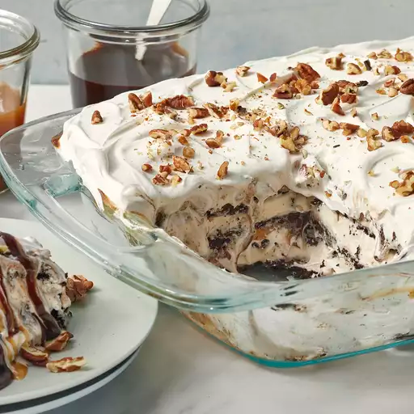

Ice Cream Sandwich Cake

Description:
A cake made with ice cream sandwiches.
Ingredients:
- 24 vanilla ice cream sandwiches, unwrapped
- 2 (8 ounce/225 gram) thawed containers of whipped topping (such as Cool Whip)
- 1 (12 ounce/340 gram) warmed jar of hot fudge ice cream topping
- 1 (12 ounce/340 gram) jar of caramel ice cream topping
- 1/4th cup of chopped pecans, or to taste
Steps:
- Gather the ingredients.
- Arrange a layer of ice cream sandwiches in the bottom of a 9x13-inch dish; top with a layer of whipped topping, hot fudge topping, and caramel topping.
- Repeat layering with remaining ice cream sandwiches, whipped topping, hot fudge topping, and caramel topping, ending with a top layer of whipped topping. Sprinkle with pecans.
- Cover the dish with aluminum foil and freeze until set, about 30 minutes. Slice and serve with your favorite toppings!
Back to List of Recipes